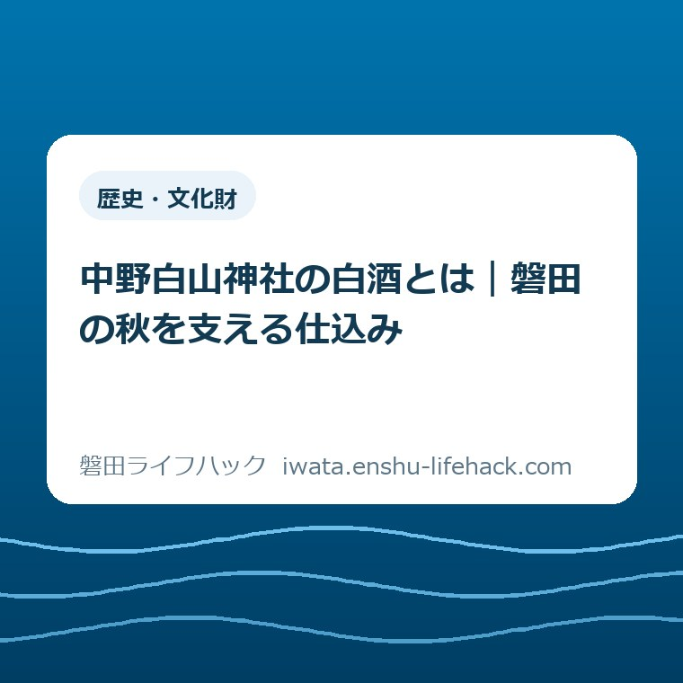
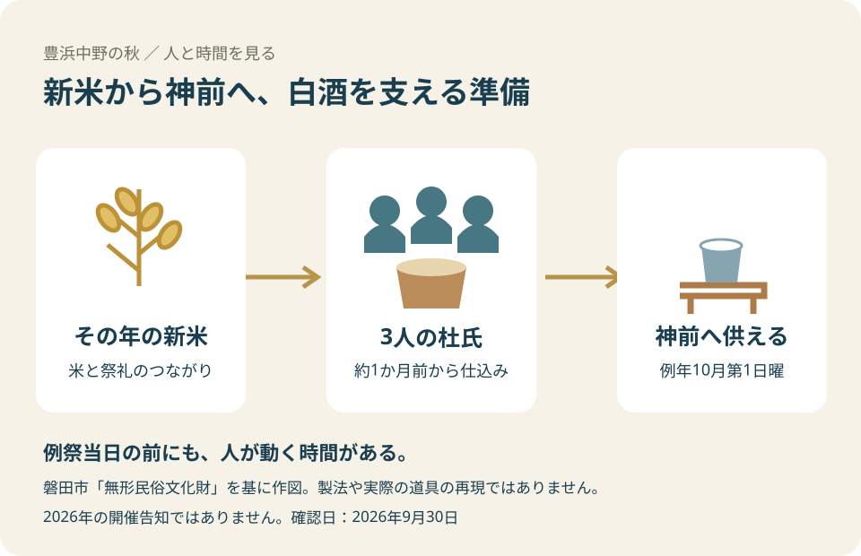
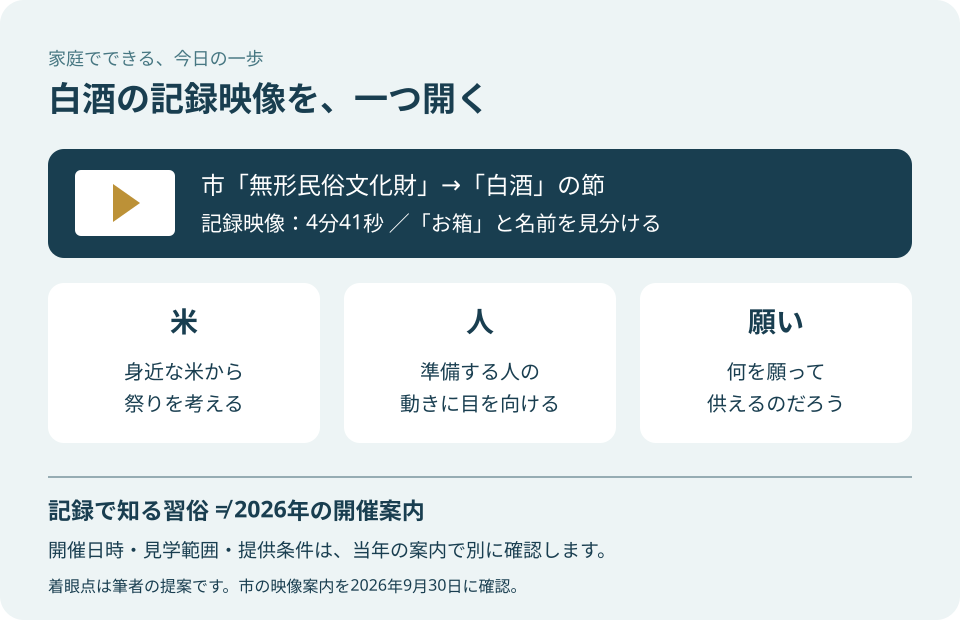

歴史・文化財
中野白山神社の白酒とは｜磐田の秋を支える仕込み

この記事の要点
Q. 中野白山神社の白酒って何？ 子どもにどう話せばいい？
A. 中野白山神社の白酒は、その年の新米から造り、神前に供えるお酒です。磐田市の説明では、地区から選ばれた3人の杜氏が例祭の約1か月前から仕込みます。例年の例祭は10月第1日曜ですが、2026年の開催告知ではありません。今日は市公式ページから4分41秒の記録映像を一つ開き、準備する人に目を向けてみるのが私の提案です。
白酒を知る前に、仕込む人の時間を見たい
中野白山神社の白酒を支えるのは、豊浜中野で仕込みを担う人たちです。地区から選ばれた人が、例祭より前に準備を始める。その手間があって、神前へ供える白酒ができます。祭りの日だけを見ると気づきにくい時間に、まず目を向けたいと思います。
秋の行事を子どもに説明しようとして、保護者が資料を調べるのも一仕事です。行事の名前は聞いたことがあっても、酒を造る理由までは分からない。そんなとき、由来を全部覚えてから話し始める必要はありません。この記事は、家庭で話すための入口を整理します。
私は大石浩之（磐田市／不動産業）です。祭礼の当事者を代弁する立場ではなく、市の記録を暮らしの言葉に置き換えて書きます。現地で仕込みを見学した体験談ではありません。担い手の働きをどう受け止めるかは、私の意見として区別します。
制度の利用条件や行事の運営は、個別の事情によって変わります。文化財の紹介文だけで、2026年の開催日時、見学できる範囲、白酒の提供方法は決められません。2026年9月30日に確認した習俗の説明と、当年の案内を分けて読むことから始めます。
中野白山神社の白酒とは、新米を神前へ供える営み
磐田市「無形民俗文化財」は、中野白山神社の例祭を、新米で造った白酒を神様に供える行事として紹介しています。別名は「どぶろく祭り」です。ここでの白酒は、その祭礼で造られるお酒を指します。一般の商品名から味や造り方を想像するより、この土地の行事として読むほうが意味をつかめます。
同ページの説明では、例祭は毎年10月の第1日曜です。白酒を造るのは、地区内から選ばれる3人の杜氏。杜氏は、この説明では酒造りを担う人と受け取ればよい言葉です。仕込みは酒造所で、例祭の1か月ほど前から始まると記されています。
子どもへの最初の説明なら、「その年にとれたお米から、地域の人がお供えのお酒を造るお祭りだよ」で十分だと私は考えます。これは筆者の言い換えです。新米、造る人、お供えという順で話せば、聞き慣れない白酒という名前を、身近な米と結びつけられます。
市が記す起源には、白酒を供えることを一度やめた年に疫病が流行し、その後は疫病退散を願って供えるようになった、という伝承があります。記事では昔から伝えられてきた話として扱います。出来事の因果関係を証明した記録や、酒の効能を説明する資料ではありません。
由来を話すときは、「地域が無事であるように願って続けてきたと伝わるんだね」と添えるのが私の提案です。願いを説明することと、願えば必ず結果が出ると言うことは別です。信仰にどのように向き合う家庭でも、地域の人が何を願ってきたかは一緒に考えられます。

市の指定記録が示す、氏子と祭礼の関係
磐田市「市指定文化財」には、「中野白山神社例祭（白酒）」が無形民俗文化財として載っています。指定年月日は2005年11月21日、所在地は豊浜中野、所有者欄は白山神社氏子です。市が紹介している対象は、白酒という品物の名前だけでなく、祭礼そのものです。
2005年11月21日は文化財に指定された日です。祭りが始まった日でも、酒造りが始まった年でもありません。子どもと年表を作るなら、「祭りの始まり」と「市の指定」を同じ欄に書かないほうが、後から読み返したときに混乱しません。開始年は今回の資料から決めません。
所有者欄に氏子が記されている点に、私は注目します。紹介ページを作る市と、地域で祭礼を担う人は同じではありません。市の資料で学べることに感謝しつつ、白酒が実際に供えられるまでには地域の働きがある。その両方を子どもに伝えたいと考えます。
同じ神社には「中野白山神社十日祭（お箱）」もあり、市のページでは別の項目になっています。白酒の映像を探すときは、神社名だけでなく、括弧の中の「白酒」まで確かめてください。名前の似た行事を同じものとして扱うと、季節や役割の説明が入れ替わってしまいます。
地域の歴史を団体で学びたくなった場合には、磐田市の文化財出前講座と幹事の相談準備も参考になります。この記事では家庭で白酒の意味を知ることに絞ります。講座の相談を始めるかどうかは、映像を見て関心が育ってから考えればよいと思います。
3人と約1か月から、準備の重さを読み取る
中野白山神社の白酒造りについて、市の説明で分かる担い手の人数は杜氏3人、仕込みを始める時期は例祭の約1か月前です。例祭当日だけに仕事が集まっているのではないことが、この二つの情報から分かります。秋の一日を支える準備は、その前から始まっています。
ただし、約1か月という期間を、3人が毎日終日働くという意味には読み替えられません。今回の資料には作業日数や一日あたりの時間、交代方法までは記されていません。人数と期間を掛けて労働時間を作り出すことはせず、分かる範囲だけを受け止めます。
私は、子どもには「お祭りの前に、どんな準備をする人がいるだろう」と聞きたいです。答えを当てさせる問題ではありません。出来上がったものを見る前に、人が動く時間があると気づく問いです。料理でも学校行事でも、完成した場面の手前にある仕事を考える入口になります。
氏子全体の人数、費用、後継者の状況も、今回の二つの市公式ページでは確認できません。地域の祭りというだけで「人手不足に違いない」と書くのは早計です。担い手の手間を認めることと、知らない困難を外から付け足すことを、私は分けておきたいと思います。
伝統という言葉で、仕込む人の時間を見えなくしてはいけない。私はそう考えます。立派な文化だと褒めるだけでは、誰がいつ動くかが消えてしまいます。白酒を知るとは、珍しい酒の名前を覚えるだけでなく、供える日までに人が準備していると知ることです。
子どもには「米・人・願い」の順に伝える
中野白山神社の白酒を家庭で説明するなら、私は米、人、願いの順に言葉を置きます。これは市の教材や決まった教え方ではなく、保護者が短く話すための提案です。一度に文化財の分類や指定年まで覚えさせず、食卓で知っている米から話を始めます。
米の話では、「このお酒には、その年にとれたお米を使うと市の説明にあるよ」と伝えます。子どもから米の品種や量を聞かれても、資料に書かれていなければ「そこは分からない」で構いません。知っていることを確かに話す姿勢も、地域について調べる学びの一部です。
人の話では、「地区で選ばれた3人が造る役を担うんだね」と続けます。子どもが映像の中で見つけた人を、全員杜氏だと決めつける必要はありません。公式説明にある役割と、画面から自分が読み取ったことを区別すると、映像を見て考える練習にもなります。
願いの話では、「地域が無事であってほしいという願いが伝わっている」と話せます。疫病の話を怖がる子どもなら、由来を詳しく語ることを急がず、願いの部分だけでもよいと思います。怖さで興味を引くために伝承を使うのは、私の勧める伝え方ではありません。
親が答えを全部用意していなくても、家庭の会話は始められます。「分かったこと」と「まだ知りたいこと」を分けておけば、次に調べる目的ができます。家で資料を読む手段を増やしたいときは、電子図書館と紙の本を親子の読書で比べた記事も読めます。白酒の資料が電子図書館にあると保証するものではありません。
良い点——短い記録へ、市の説明からたどれる
磐田市の白酒紹介で私が良いと考えるのは、文章と記録映像への入口が同じページにあることです。「無形民俗文化財」の白酒の節には、4分41秒と案内された映像へのリンクがあります。読むだけでは思い浮かべにくい祭りを、別の方法で知る選択肢になります。
文章には人数や時期があり、映像には動きに目を向ける入口があります。私は、どちらかだけで全部を理解したつもりになるより、短い説明を読んでから映像へ進める形を評価します。保護者が別々の検索結果から同じ行事の情報を探し直す手間を減らせるからです。
市の指定一覧と紹介ページを合わせて読める点も助かります。指定一覧では名称、場所、指定日を確認し、紹介ページでは新米や仕込みの話を読む。資料ごとに役割が違うと分かれば、短い一覧に製法の詳しい説明がないことを、情報が役に立たない理由にせずに済みます。
地域の記録を残す意味は、磐田市「史料を遺す」展と古文書のデジタル化の記事でも扱っています。古文書を画像にして読む話と、祭礼の動きを映像で知る話は対象が異なります。白酒の記事では、仕込みを担う人とその時間に焦点を当てます。
注文したい点——記録と開催案内の区別を見やすく
中野白山神社の紹介について私が注文したいのは、記録映像と当年の開催案内の違いを、初めて読む人にも見分けやすくしてほしいという点です。これは案内の見せ方への要望です。文化財の紹介ページに書かれた毎年の時期から、当年の実施内容まで確定したと思い込む余地があります。
2026年10月の第1日曜は、暦では10月4日です。ただし、この記事で確認したのは例年の習俗であり、2026年10月4日の実施を告知する資料ではありません。開始時刻や見学方法も、この日付からは分かりません。家族の予定表に書く際には、開催確認前の候補と扱う必要があります。
私は、市の記録ページに、当年の案内は別に確認する旨が見やすく添えられると助かると考えます。地域の担当者へ同じ質問が繰り返される前に、閲覧者が何を知らないか整理できるからです。ここで、氏子の方に新しい広報作業を当然のように背負わせたいわけではありません。
白酒が来訪者に提供されるか、購入できるか、仕込みの場所を見学できるかは未確認です。記事を読んでそのまま酒造所へ向かう案内にはしません。紹介文に書かれていない条件を空欄のまま扱うことは、読む側の期待と、迎える側の段取りが食い違うのを防ぐためです。

対案・結論——今日は白酒の記録映像を一つ開く
中野白山神社の白酒を知るために、今日行うことは市公式ページから記録映像を一つ開くことです。外出を決める、行事へ申し込む、詳しい由来を暗記するところまでは求めません。家で行事の入口に触れるだけなら、氏子の方へ説明を頼む前にも始められます。
磐田市「無形民俗文化財」を開き、「中野白山神社例祭（白酒）」の節へ進みます。その中の「中野白山神社（白酒）」というYouTubeへのリンクが入口です。市は長さを4分41秒と記しています。「お箱」の映像もあるので名称を確かめます。
見るときの問いは、「お供えができるまでに、誰が何をしているだろう」の一つに絞るのが私の提案です。全場面の解説を親が引き受ける必要はありません。分からない道具が出たら名前を推測で教えず、形や使い方で気になった点を言葉にするだけでも、会話は続きます。
映像の後に子どもが話したことを、正解と不正解にすぐ分けなくてもよいと思います。「米から造るのが分かった」「人が準備していたのが気になった」など、一つ残れば十分です。ここに書いた言葉は家庭での会話の例で、実際の子どもの発言を記録したものではありません。
動画が開けない場合は、市のページに載る文章と仕込みの写真でも入口になります。映像を全部見終えることを新しい宿題にせず、公式説明で確認できたことを一つ話す。通信環境や子どもの関心に合わせ、家族がその日に取れる時間の中で考えるのが私の勧めです。
大石の視点——文化を知る入口まで、地域に任せきりにしない
中野白山神社の祭礼をどう家庭へ伝えるかについて、私は、まず公開済みの記録を使って知るのがよいと考えます。これは仕込みに参加した経験からの話ではなく、段取りに対する私の意見です。地域の人に聞く前に読める説明があるなら、そこまで自分で進めることには意味があります。
不動産の仕事をする立場から、私は家や土地だけで地域の暮らしを説明したくありません。そこに暮らす人が行う準備や引き継ぎも、暮らしを形づくるものだと考えるからです。ただし、白酒の祭礼が住宅の価値にどう影響するかといった、裏づけのない話へ広げるつもりはありません。
正直に言えば、子どもに祭りの意味を伝えるなら、現地の空気に触れるほうがよいのか、家で記録を見るほうがよいのかは迷います。家族の事情も、当年の受け入れ条件も違います。だから、見学を決める前の段階では、移動を伴わない映像を最初の一歩に選びました。
私は、文化を守るという大きな言葉から子どもに役目を負わせたくありません。まずは、身近な豊浜中野に、米からお供えを造る人がいると知ること。その理解があれば、祭りを見るときに完成した場面だけでなく、準備してきた人の時間にも目を向けられると思います。
FAQ——中野白山神社の白酒を知るときの疑問
中野白山神社の白酒について、2026年9月30日に確認した磐田市の文化財紹介を基に答えます。例年の説明で分かることと、2026年の個別案内が必要なことを分けています。味、製法の細部、提供条件を推測で補う回答はしていません。
中野白山神社の白酒とは何ですか？
中野白山神社で、その年の新米から造り神前へ供えるお酒です。磐田市は例祭を「どぶろく祭り」とも紹介しています。地区から選ばれた3人の杜氏が約1か月前から仕込むとされ、祭礼は市指定の無形民俗文化財です。この記事では商品の味や一般的な白酒の分類ではなく、豊浜中野で受け継がれている祭礼として説明しています。
2026年の例祭は10月4日に開催されますか？
市の文化財紹介では例年10月第1日曜ですが、確認した資料は2026年の開催告知ではありません。暦の上では2026年10月4日が該当しても、実施、開始時刻、見学範囲をこの記事で確定できません。白酒の提供や購入の可否も未確認です。外出の予定を決める場合は、市公式ページで当年の案内と確認先を確かめてください。
子どもと家で白酒の行事を知る方法はありますか？
磐田市「無形民俗文化財」の「中野白山神社例祭（白酒）」の節に、4分41秒の記録映像へのリンクがあります。神社名が同じ「お箱」の映像と取り違えず、「白酒」を選びます。米、準備する人、供える願いのどれかに目を向けて見るのが筆者の提案です。これは例年の習俗を知る入口で、当年の開催条件を保証する映像ではありません。
本記事は磐田市の公式案内ではありません。文化財の公開情報や行事の運営、制度の条件は変わる場合があります。今日は記録映像を一つ開くところから始め、外出などの個別判断に進む際は、最後に必ず磐田市の公式ページで最新情報と確認先を確かめてください。
参考にした公式情報
- 無形民俗文化財／磐田市（2025年2月27日更新、2026年9月30日確認）
- 市指定文化財／磐田市（2026年8月21日更新、2026年9月30日確認）
最終確認日：2026-09-30 ／ 本記事は公表情報と執筆者の見解を分けて記載しています。制度・数値・公開状況は変更される場合があるため、最新情報は磐田市公式ページでご確認ください。